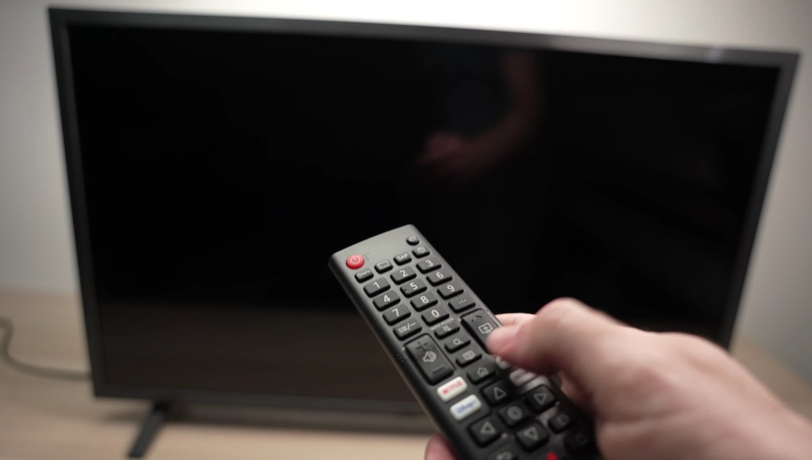
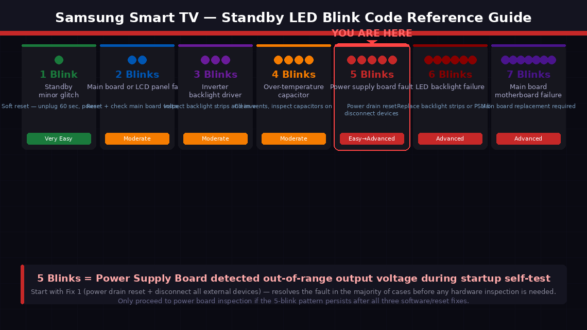
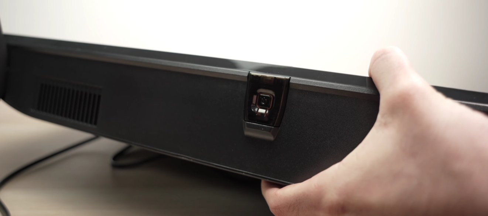
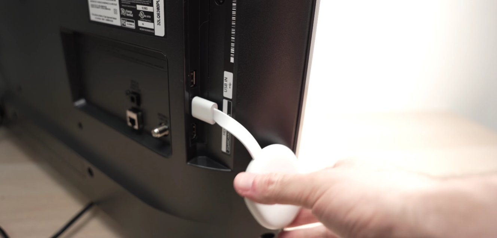
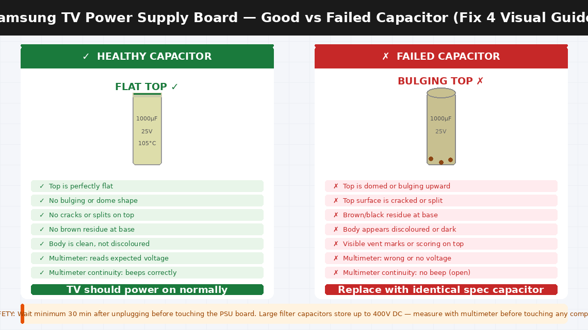
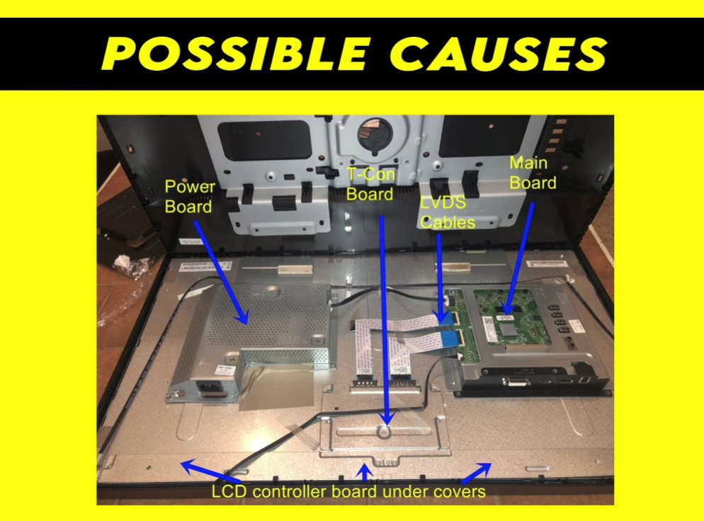
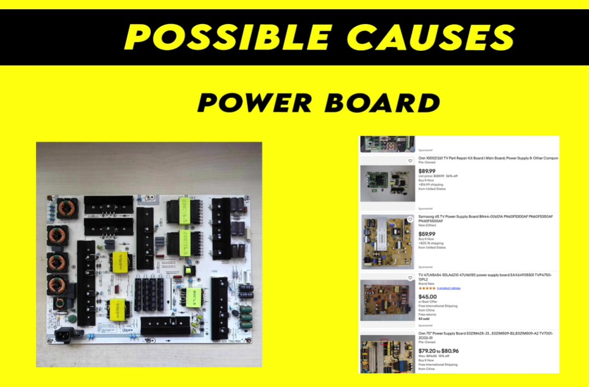

Five Blinks. Pause. Five Blinks. Your TV Is Sending You a Message.
You settle in for movie night, pick up the remote, press power — and your Samsung Smart TV refuses to turn on. The screen stays black. But down at the bottom of the TV, the small red standby light is blinking. Not randomly. Exactly five times, pausing, then five times again. Like a distress signal in Morse code that nobody gave you the decoder for.
You press power again. Still blinking five times. You unplug and plug back in. Five blinks. You try the TV’s physical power button. Five blinks. Same every time.
The five-blink pattern feels deliberate — and it is. Samsung designed this blinking sequence intentionally as a diagnostic signal. The number of blinks before each pause is a specific fault code pointing to a particular component or subsystem. Five blinks means the TV’s internal diagnostics have detected that one or more output voltages from the power supply board are outside their expected range.
And once you know that, you’ll also know that this is one of the more approachable Samsung TV faults to resolve at home — because in the majority of cases, the cause is a power supply issue that a proper reset or a capacitor inspection can fix without a service centre visit.

What Does Red Light Blinking 5 Times Mean?
Samsung Smart TVs use their standby LED as a diagnostic blink code system. The number of blinks before each pause is a specific fault code that points to a particular component or subsystem. The reference chart below shows all Samsung blink codes — 5 blinks is highlighted.

Here’s what’s actually happening inside the TV during a 5-blink fault: Your Samsung Smart TV has a main power supply board (PSU board) that converts 230V/110V AC power from your wall socket into multiple lower DC voltages — typically 5V for control circuitry, 12V or 24V for the backlight, and other voltages for the main board and T-Con board.
When the TV powers on, the main board runs a self-test sequence. If the power supply board cannot deliver the correct voltages, the main board detects this, refuses to complete the startup sequence, and signals the fault with five blinks.
The four most common underlying causes:
- A power surge or voltage spike has temporarily upset the TV’s internal power circuitry — the most common cause, and the one a proper power reset can clear completely.
- A connected external device — a soundbar, gaming console, USB device, or HDMI accessory — is drawing irregular power through the TV and disrupting the power supply’s output.
- Faulty or bulging electrolytic capacitors on the power supply board — capacitors are the most likely components to fail in a TV power supply over time. A visually swollen or leaking capacitor can no longer regulate voltage correctly and will cause the exact five-blink fault consistently.
- A component failure on the power supply board beyond capacitors — a blown fuse, a failed transistor, or a damaged output stage.
Tools Required
You may need all of these depending on how far into the fixes you go:
- A Phillips head screwdriver (for accessing the back panel if Fix 4 is needed)
- A clean, dry cloth
- A flashlight or torch (for inspecting capacitors)
- A multimeter (optional but useful for Fix 4)
- Replacement capacitors for your TV model (only if Fix 4 is needed — available for ₹200–800 in India or $5–20 in the US)
- About 15–30 minutes
5 Step-by-Step Fixes
Work through these in strict order. The five-blink fault clears at Fix 1 or Fix 2 for a significant proportion of Samsung TV owners — do not skip ahead.
This is the fix that works most often. Samsung Smart TVs store residual charge in their power supply capacitors that can hold a fault state even after the TV appears to be off. Simply unplugging and replugging within a few seconds does not clear this residual charge. A proper drain reset does.
- Turn the TV off using the remote — or press the physical power button on the TV if the remote isn’t responding.
- Unplug the TV’s power cable from the wall socket completely — not from the TV end, from the wall.
- Press and hold the physical power button on the TV itself (not the remote) for 30 seconds. This actively discharges the residual power stored in the internal capacitors rather than waiting for it to drain passively.
- Release the button and wait an additional 60 seconds with the TV still unplugged.
- While the TV is unplugged, disconnect every single device connected to it — HDMI cables, USB devices, optical audio cables, antenna cables, everything. Remove them all.
- Plug only the power cable back in — nothing else yet.
- Press power and observe the standby light carefully.
- If the TV powers on fully without the five-blink pattern, reconnect your external devices one at a time, turning the TV off and on between each reconnection. If the five-blink pattern returns after reconnecting a specific device, that device is causing a power draw fault — replace or repair it.
If the five-blink pattern persists with nothing connected except power, move to Fix 2.

Samsung TVs support a cold boot sequence performed via the remote that resets the TV’s startup firmware independently of the power drain. This works even when the TV won’t reach its home screen.
- Ensure the TV is in its five-blink standby state (plugged in, not fully on).
- On the Samsung remote, press and hold the Power button for 10–15 seconds without releasing.
- The TV may attempt to restart during this hold — continue holding through any attempted restart.
- After releasing, the TV should perform a cold boot startup sequence — a slower, more thorough startup that bypasses cached startup states.
- If the TV reaches the Samsung logo screen and continues loading to the home menu, the reset succeeded.
- Alternatively, try the remote reset sequence: Press Mute → Volume Up → Return → Volume Up → Return → Volume Up → Return in rapid sequence. On some Samsung models this triggers a factory service mode reset.
If neither remote method changes the five-blink behaviour, move to Fix 3.

Before opening the TV, rule out external power quality as the cause. A wall socket delivering inconsistent or low voltage — particularly in areas with unstable electricity supply — can cause the TV’s power supply board to detect out-of-range voltages even when the board itself is healthy.
- Try plugging the Samsung TV into a completely different wall socket — ideally in a different room on a different circuit. Extension leads and power strips can introduce voltage drops that affect sensitive electronics.
- Inspect the TV’s power cable for visible damage — kinking near the plug, fraying at either end, or scorch marks near the connector.
- If you have a multimeter, set it to AC voltage (VAC) and measure the socket output — it should read between 210–240V (India) or 110–120V (US).
- Try the TV on the new socket and observe whether the five-blink pattern clears.
If all external factors check out and the five-blink pattern persists, the fault is almost certainly inside the TV’s power supply board. The most common physical causes — a blown inline fuse or visually swollen capacitors — can be identified by a careful home user with basic tools.
- Unplug the TV completely and lay it face-down on a flat surface protected by a blanket to avoid screen damage.
- Remove the back panel screws using your Phillips screwdriver — typically 10–20 screws around the perimeter. Keep them in a small dish.
- Carefully lift the back panel away and set it aside.
- Locate the power supply board — the board closest to where the power cable enters the TV, recognisable by the large cylindrical capacitors mounted on it.
- Wait for capacitors to discharge — use your multimeter set to DC voltage and measure across the largest capacitors before touching anything. Wait until the reading is below 50V.
- Once safe, inspect the capacitors closely with your flashlight:
- A healthy capacitor has a perfectly flat top — level across its entire surface.
- A bulging or domed top, a split or cracked top, or visible brown residue at the base indicates a failed component.
- Look also for the board fuse — a small glass or ceramic fuse in a fuse holder near the power input. A blown fuse will show a visibly broken filament inside.
- If you find visually swollen capacitors, replace them with exact-specification replacements — matching the voltage rating and capacitance value printed on the original.
- A blown fuse should be replaced with an identical-specification fuse only — never a higher-rated one.


If the TV occasionally reaches a partial boot state before the five-blink fault triggers, Samsung TVs include a hidden service menu that can perform a deeper reset than the consumer settings menu allows.
- With the TV in standby (not fully on), press the following sequence on the Samsung remote: Mute → 1 → 8 → 2 → Power. On some models the sequence is Info → Menu → Mute → Power.
- If the service menu opens, navigate to Factory Reset or Reset All and confirm.
- The TV will restart with a clean firmware state.
- Note: the service menu sequence varies by model year. If the sequences above don’t work, search “Samsung [your model number] service menu” on Samsung’s support community at samsung.com/community for the correct combination.

When to Call a Professional
Samsung TV power supply faults are among the more fixable TV issues at home — but there are clear situations where independent troubleshooting is not the right call:
- The capacitors on the power supply board are visibly damaged but you are not comfortable with soldering. Capacitor replacement on a Samsung TV power board is a well-documented repair, but it requires a soldering iron, desoldering tools, and confidence working on circuit boards. A local electronics repair shop can typically perform this repair for ₹500–1,500 (India) or $50–100 (US).
- The power supply board shows no visible damage — fuse intact, capacitors flat — but the five-blink fault continues. The fault may be on the main board, which requires specialist test equipment to diagnose.
- The TV blinks a different number of times after you attempt any of the fixes. A change in the blink count means the fault has shifted to a different subsystem — a clear sign for professional diagnosis.
- Your Samsung TV is within its warranty period. Samsung offers a 1-year standard warranty on most Smart TVs in India and the US. A TV that won’t power on due to an internal power fault is a warranty claim — contact Samsung before opening the back panel, as internal inspection can affect warranty coverage.
To reach Samsung support:
- India: samsung.com/in/support — Customer care: 1800-5-726-7864 (toll-free, 24 hours)
- US: samsung.com/us/support — Phone: 1-800-726-7864
Have your TV’s model number and serial number ready — both printed on a sticker on the back panel. Samsung’s support team can check your warranty status instantly and arrange either a home technician visit or a carry-in service centre appointment.
Quick Summary
| Fix | Difficulty | Time Needed |
|---|---|---|
| Full power drain reset with all devices disconnected | Very Easy | 5 minutes |
| Cold boot reset via remote button sequence | Very Easy | 3 minutes |
| Test wall socket and check power cable | Easy | 5 minutes |
| Inspect power board for blown fuse and bad capacitors | Moderate | 30 minutes |
| Factory reset via Samsung service menu | Easy | 10 minutes |
Start at Fix 1 every time without exception. A full power drain with all external devices disconnected resolves the five-blink fault in a meaningful proportion of Samsung TV cases — and it costs nothing and takes five minutes. The capacitor inspection in Fix 4 is the next most impactful step for TVs that are three or more years old, because capacitor failure in TV power supplies follows a predictable timeline.